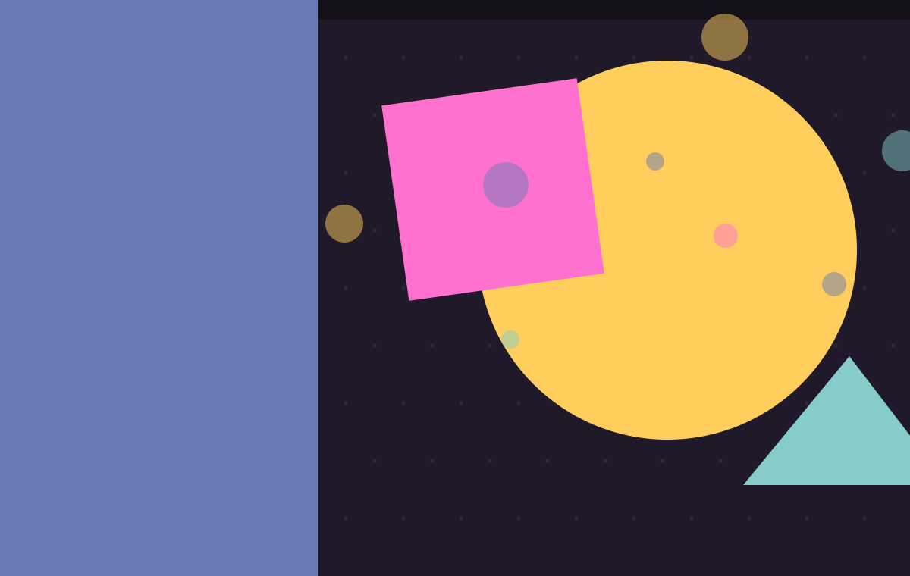
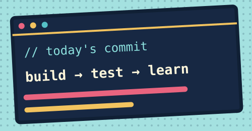
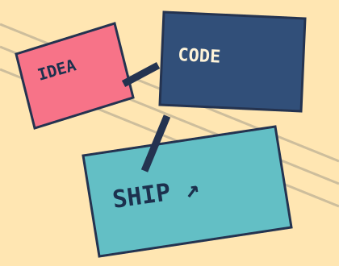
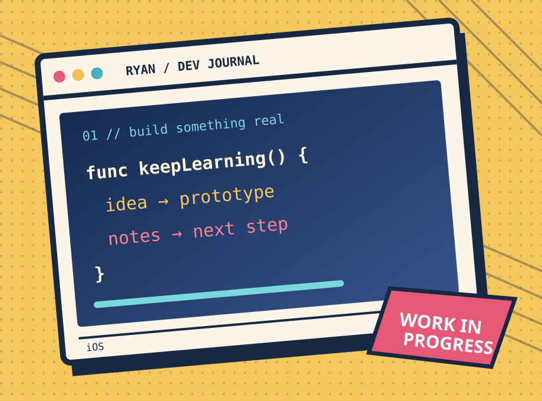
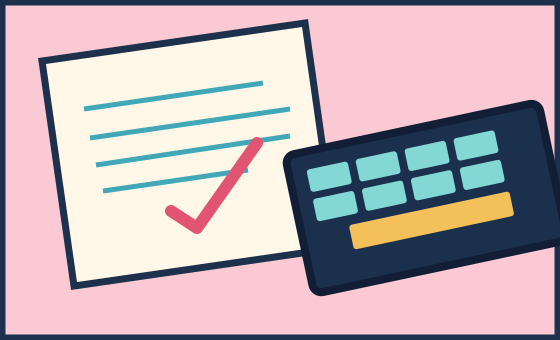
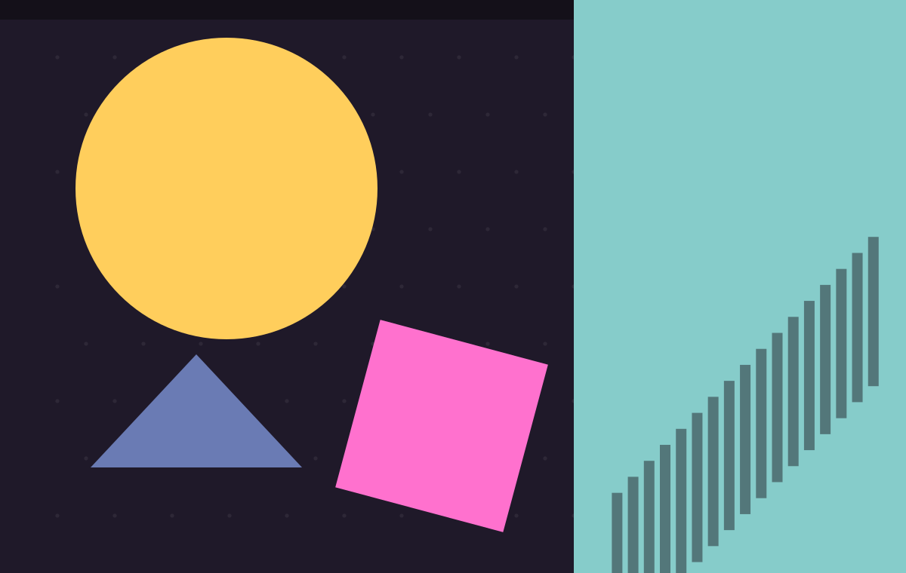
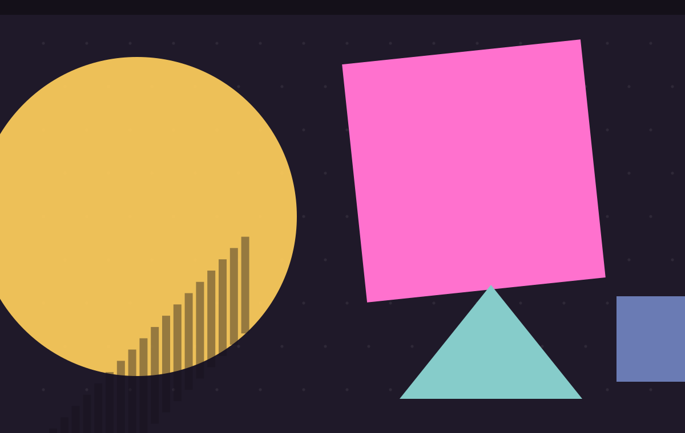

 RYAN / 开发日记 我是 Ryan。下一格，继续写代码。 做 iOS 开发，也在学习全栈。这里先记录两份练习项目；文章会在写好后发布。 翻到关于页 →看看项目     继续!
 // PROJECT · DATA 从数据链路开始 订单分析与推荐平台：尝试把采集、实时计算、离线处理和展示串成一条可追踪的流程。 查看项目 →邮件交流 const pipeline = [ 'Kafka → Spark Streaming', 'Flume → HDFS', 'Sqoop → Hive' ]
 // PROJECT · AI 也在探索 AI 应用 LawDesign 是法律场景的智能体平台项目。我还在持续整理和完善，欢迎交流思路。 查看项目 →邮件交流 const interests = [ 'iOS', '后端与数据', 'AI 应用' ]